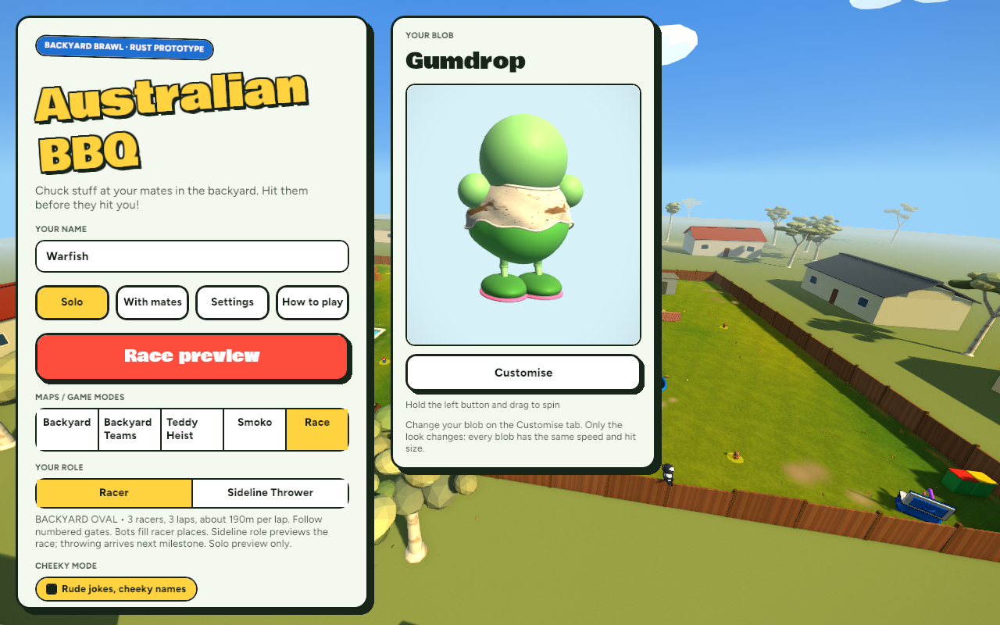
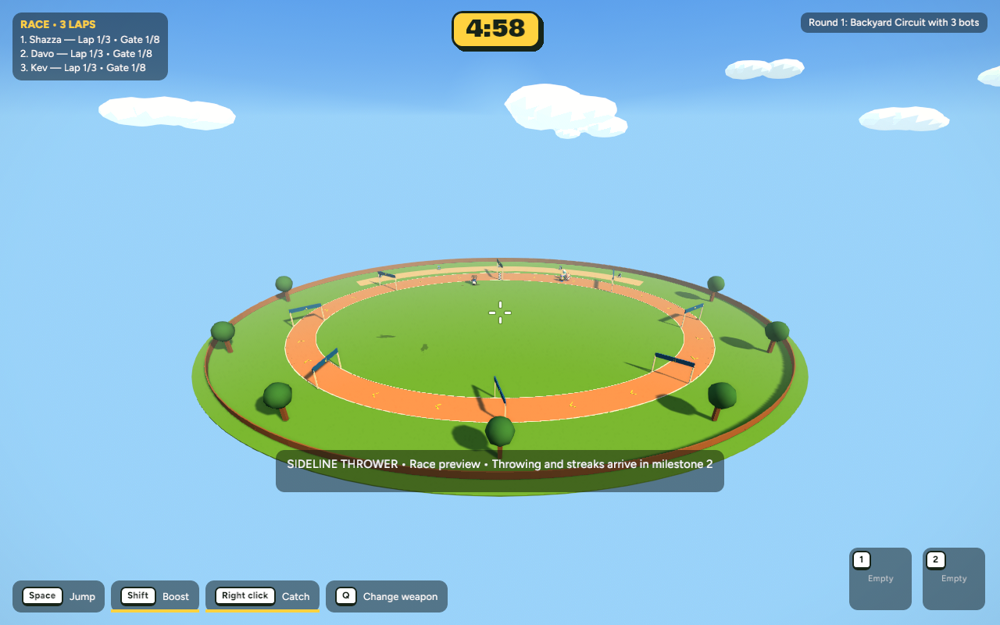
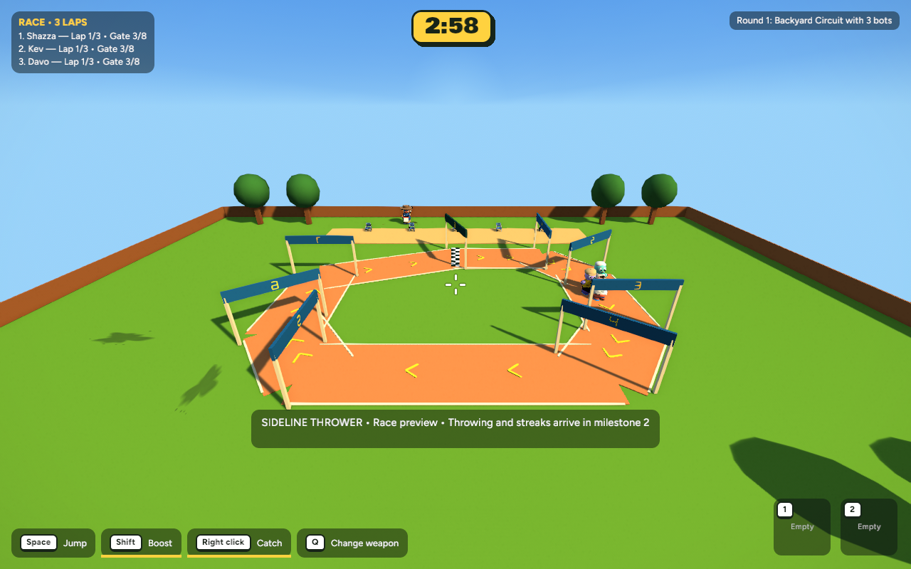
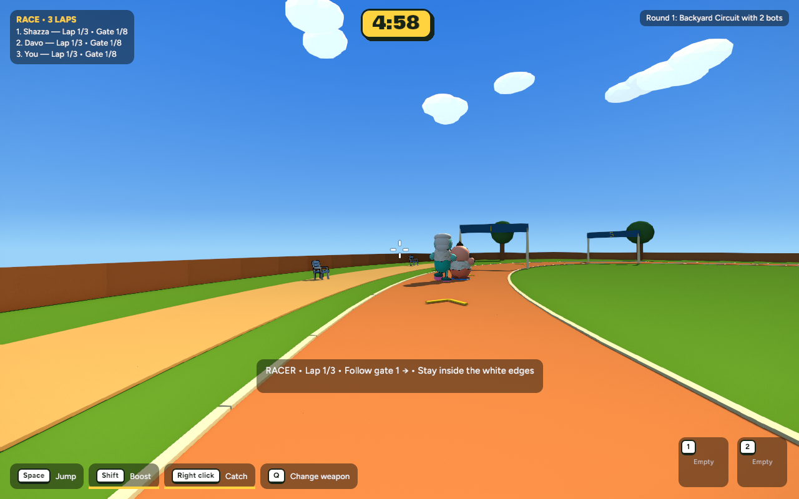
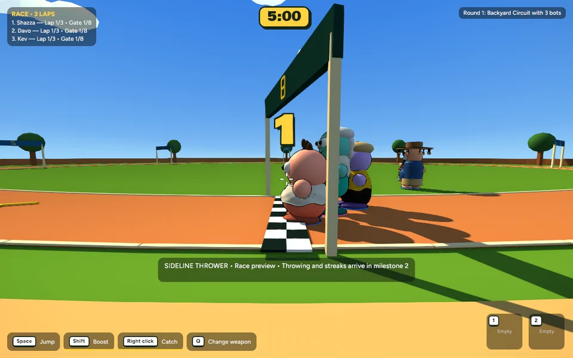
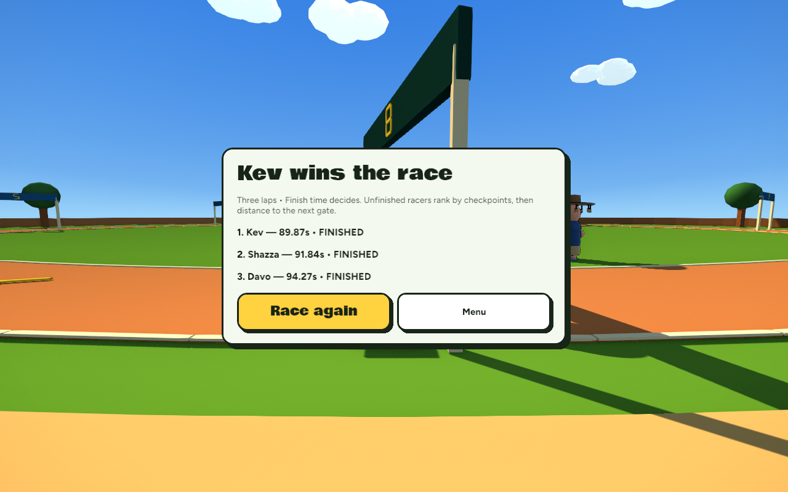

Three racers. Three laps. Now 190 metres per lap—three times the smaller oval. Follow the numbered gates around a smooth oval dirt circuit. This milestone establishes the race; the sideline throwing game and upgrades are still to come.
Solo → Maps / Game modes → Race → Racer or Sideline Thrower → Race preview.

Racer: you race two bots. Use WASD to move, the mouse to steer, Space to jump and Shift to boost. Sideline Thrower: preview three bots racing from the sideline area. Throwing and streak points are not enabled in this foundation milestone.


A curved outer fence and oval lawn replace the square map. The dirt circuit has smooth bends, white lane edges, yellow direction arrows, eight numbered gates and a chequered finish. The sideline terrace follows the near bend. Each lap must pass the gates in order. Leaving the track returns you to your last passed gate without advancing your race progress.


Actual running game, using existing movement and bot steering. No concept imagery.
Finish times determine the order. The round ends when all racers finish, or after five minutes. The recorded full race finished in 89.87s, 91.84s and 94.27s. Unfinished racers rank by completed checkpoints, then distance to their next gate. Disconnected racers rank last.
613 tests pass; one existing test is ignored. Tests include bots completing all three laps with real movement, checkpoint order, shortcut rejection, role-based bot fill, and switching back to the Smoko yard, and isolating the larger arena from the backyard pool, trampoline and boundary.
| Run | Mean frame time | Average FPS |
|---|---|---|
| Heist baseline · 11 bots | 8.939 ms | 111.87 |
| Heist after · matched setup | 7.938 ms | 125.97 |
| Long oval · 3 bots | 6.014 ms | 166.27 |
No observed regression in the matched Heist run; asset counts remain identical. Timing changes may be ordinary run-to-run noise. The long oval is a separate workload, with an overview camera reframed for its larger arena.
1280 × 800, no vsync, 600 samples after warmup. Wall-clock frame intervals, not GPU timings. Long oval P95: 7.142 ms, zero frames over 16.67 ms.This is a solo race preview. Online race synchronization is deferred to the later milestone and online starts are blocked. No sideline hit scoring, upgrades or thrower bots yet. The circuit reuses existing rendering, movement and procedural models.
Recovery checkpoint and verification details. Review before committing, pushing or starting Milestone 2.